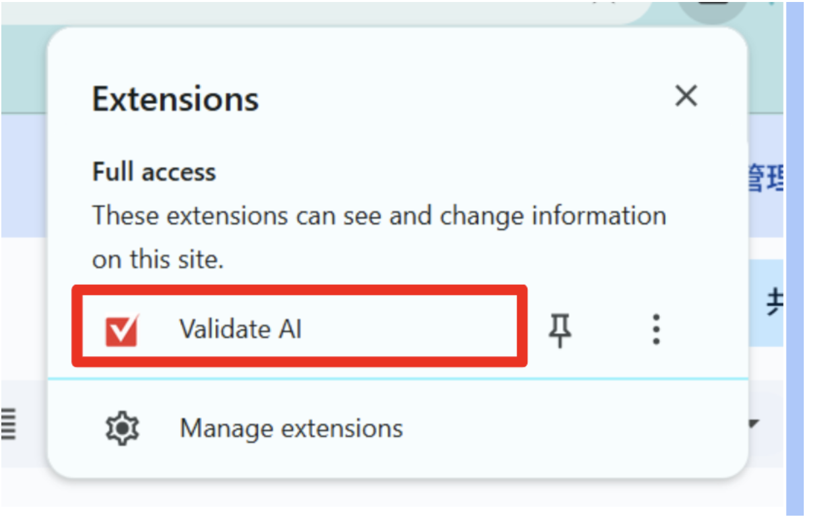
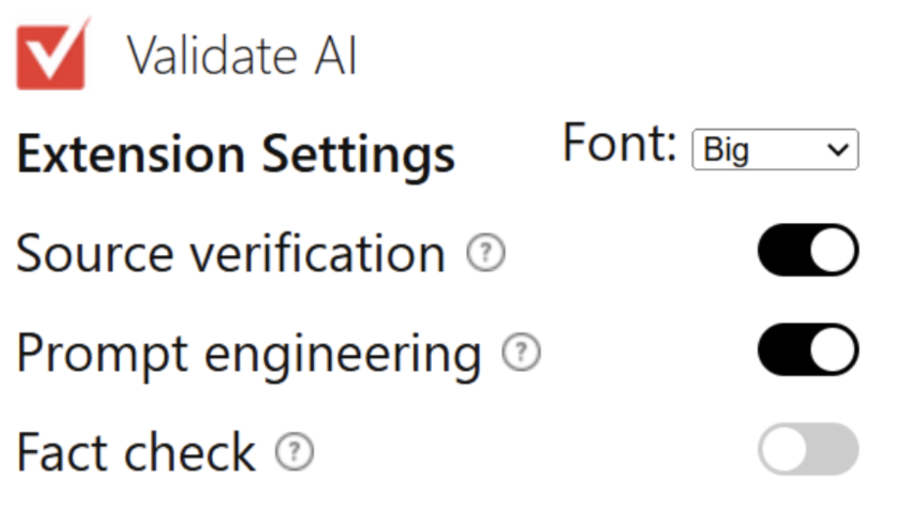

Research Report · 2025
AI vs. Human: Telling the Difference
A linguistic analysis exploring how to distinguish AI-generated content from human-written news articles.
A Chrome extension that helps users check the reliability of AI-generated responses by validating sources and surfacing relevant fact-checks.
Validate AI is a Chrome browser extension designed to help users better understand and trust AI-generated responses. When an AI provides an answer, the extension:
By combining source validation, thoughtful prompt design, and fact-checking tools, the extension gives users more transparency and control helping them decide when an AI response is reliable and when it should be questioned.

Follow these steps to get started with the Validate AI Chrome extension.
Step 1. Open the extension by clicking the puzzle icon in the top right corner of your Chrome browser.
Step 2. In the extensions menu that appears, click on "Validate AI" to open the extension panel.

Step 3. Use the settings menu inside the extension to toggle on the features you want to use source checking, fact-checking, and more.

Step 4. Open ChatGPT (or another AI tool) in your browser. The extension will now work alongside it automatically.
Tip: Once the extension is set up, you do not need to open it every time. It will run in the background while you use AI tools in your browser.
Research Report · 2025
A linguistic analysis exploring how to distinguish AI-generated content from human-written news articles.
Presentation · 2025
See the final presentations delivered by the 2025 Sprintern cohort covering their research and projects.